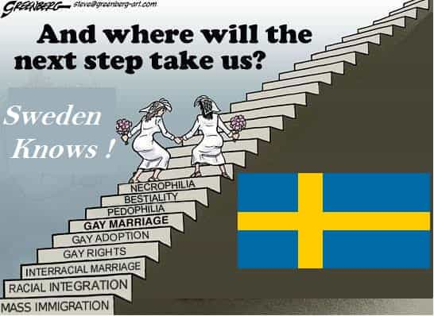

Remember hearing your local preacher or priest talking about how the city of Sodom and its wicked people digged their own graves at Sunday School? Sweden in a not so far future might end up like Sodom 2.0. Its educators are currently digging their own graves by forcing gender experiments on children, with no right of choice and ability to differentiate from right and wrong yet.
Judes 1,7 Even as Sodom and Gomorrah, and the cities about them in like manner, giving themselves over to fornication, and going after strange flesh, are set forth for an example, suffering the vengeance of eternal fire.
Sweden’s educators claim their aim is to promote “gender equality” in order to create a society in which its citizens wont discern between male or female when choosing friendships or relationships. Educators say their efforts will be worth it, since they claim it will create more “successful” citizens that treat each other as “human beings” rather than “men/women.”
Some of their attempts to social engineer children include forbidding kids from using pronouns, such as “he” or “she.” If a boy tries to call a female colleague by she/her/girl or the contrary, the teacher advertises them to stop doing it. The same rule applies for girls, since it can deconstruct their idea of a “gender neutral society”. They promote everyone to call each other with the substantive friend or “hen”, a genderless pronoun originally from Nordic Finnish.
Other strategies of theirs include making boys more submissive by making them play with dolls, pretend to be cooking in a kitchen, and dress like girls. At the same time, they try to make girls more rebellious and defiant by teaching them to yell , run, dress on their own, and play outside.
During drawing classes, one of the teachers, Ms.Esteka, states that they try to enforce boys into drawing boys with long eyelashes just like they would do if they were drawing girls even if her male students complain “We know its not like that in real life.”
The state curriculum in Sweden urges teachers to “counteract traditional gender roles and gender patterns.” – Andrea Bruce for The New York Times
Sweden’s toy industry is also taking advantage of this “progressive” trend by creating gender-neutral toys and children’s books. Sweden Educators completely forbid children, especially boys into reading children’s books that would teach them traditional gender roles like Sleeping Beauty and Cinderella.
What kind of men and women Sweden will raise with all those experiments that sound batshit insane? Are they trying to turn Sweden into Sodom/Gomorrah 2.0?

Brazil is my homeland. It might be a third world country and not as developed as Sweden, but at least we don’t force naive young boys and girls, who have no way of fighting back and are easily influenced, to switch roles like crazy nazi Swedish educators are doing. The repercussions of the social engineering they are doing to those poor children will be terrible and will definitely only bring Sweden one step closer to total collapse.
America’s K12 schools might not be perfect as well, but at least they don’t try to social engineer in a forceful way America’s youth into changing their traditional roles. For now.
I wonder why parents haven’t done anything yet and are allowing such behaviour from people (educators), who were supposed to be teaching their youth about freedom of will and speech instead of forcing children into their creepy social experiments and ideologies.
I’m proud of the strong latin machismo culture in my country of birth and the rest of Latin America. It will sure help South America from becoming so degenerate and gaily as Sweden has. This is just as sad and as disturbing as the atrocities Nazi scientists commited in WW2.
Swedes can laugh all they want about the educational disadvantage American and Brazilian public high schools are when compared to theirs, but at least we are manly and don’t force no one into becoming a tomboy nor a tomgirl. They are basically trying to condition males and females from a young age to switch their roles, behaviour and sexual preferences derived from their gender.
Isaiah 3, 9 The shew of their countenance doth witness against them; and they declare their sin as Sodom, they hide it not. Woe unto their soul! for they have rewarded evil unto themselves.
In short, Swedish culture is reaching a point of no return in which in a few years from now the Cultural Marxists will have successfully annihilated all national identity in that country. I’m no xenophobic but I don’t think it’s morally or ethically right to force anyone into switching their normal biological roles and sexual preferences.